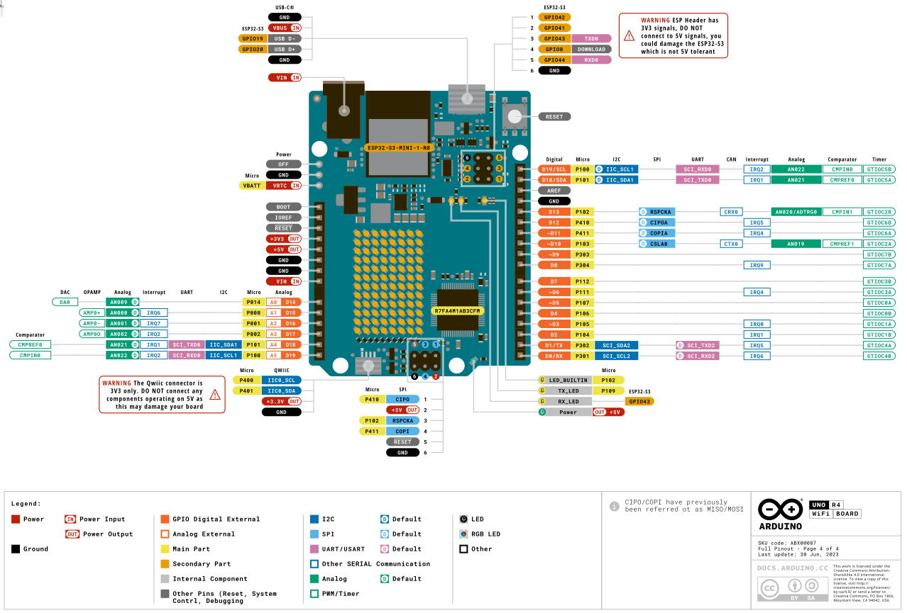

BytesOfProgress
Wiki
Arduino Uno R4 WiFi Datasheet
General Information
The Arduino UNO R4 WiFi is designed around the 32-bit microcontroller RA4M1 from Renesas while also featuring a ESP32 module for WiFi and Bluetooth connectivity. Its distinctive 12x8 LED matrix makes it possible to prototype visuals directly on the board, and with a Qwiic connector, you can create projects plug-and-play style.
Arduino's DocumentationArduino's Datasheet
Specifications
Name: Arduino® UNO R4 WiFi
SKU: ABX00087
Microcontroller: Renesas RA4M1 (Arm® Cortex®-M4)
Radio Module: ESP32-S3-MINI-1-N8
USB: USB-C® Programming Port
Digital I/O Pins: 14
Analog input pins: 6
DAC: 1
PWM pins: 6
External interrupts: 2, 3
UART: Yes, 1x
I2C: Yes, 1x
SPI: Yes, 1x
CAN: Yes 1 CAN Bus
Circuit operating voltage: 5 V (ESP32-S3 is 3.3 V)
Input voltage (VIN): 6-24 V
DC Current per I/O Pin: 8 mA
Clock speed (RA4M1): 48 MHz
Clock speed (ESP32-S3-MINI-1-N8): up to 240 MHz
Memory (RA4M1): 256 kB Flash, 32 kB RAM
Memory (ESP32-S3-MINI-1-N8): 384 kB ROM, 512 kB SRAM
Width: 68.85 mm
Length: 53.34 mm
PinOut
back